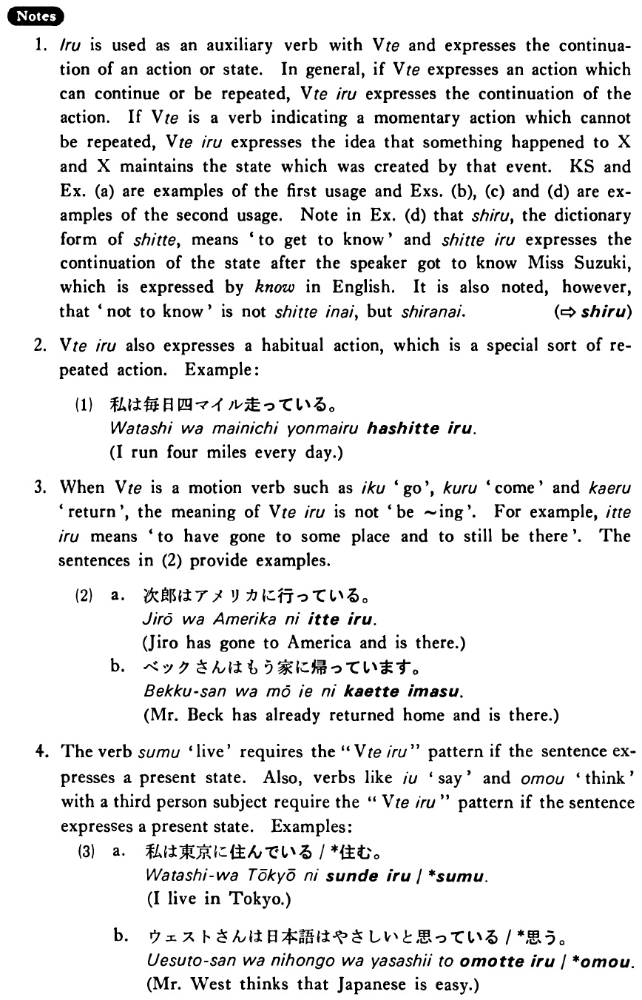

いる (2) (B. 155)
- (ks).
- 佐々木さんは酒を飲んでいる・います。
- Mr. Sasaki is drinking sake.
- (a).
- 和江は新聞を読んでいる。
- Kazue is reading a newspaper.
- (b).
- この林檎は腐っている。
- This apple is rotten.
- (c).
- 木が倒れている。
- A tree has fallen down (and is lying there).
- (d).
- 私は鈴木さんを知っています。
- I know Miss Suzuki.
